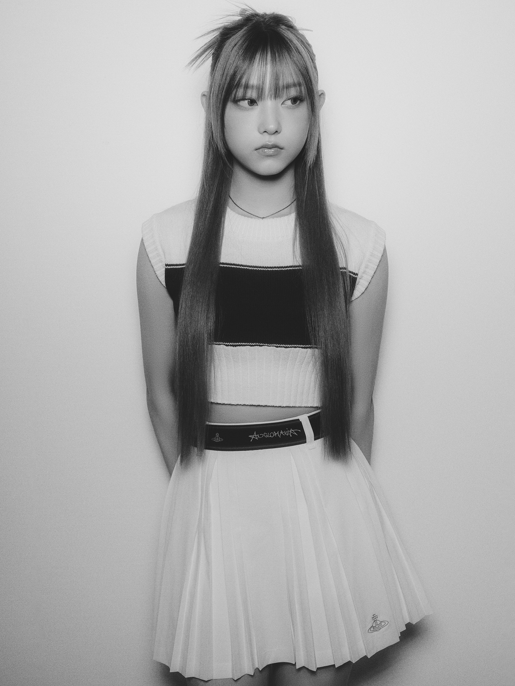
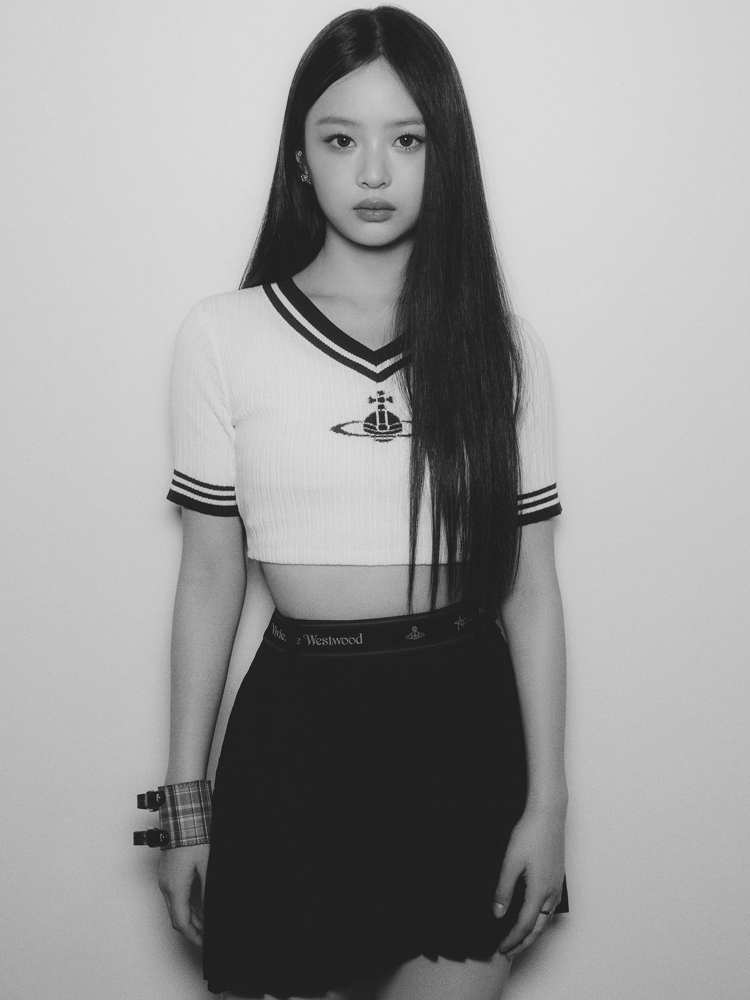
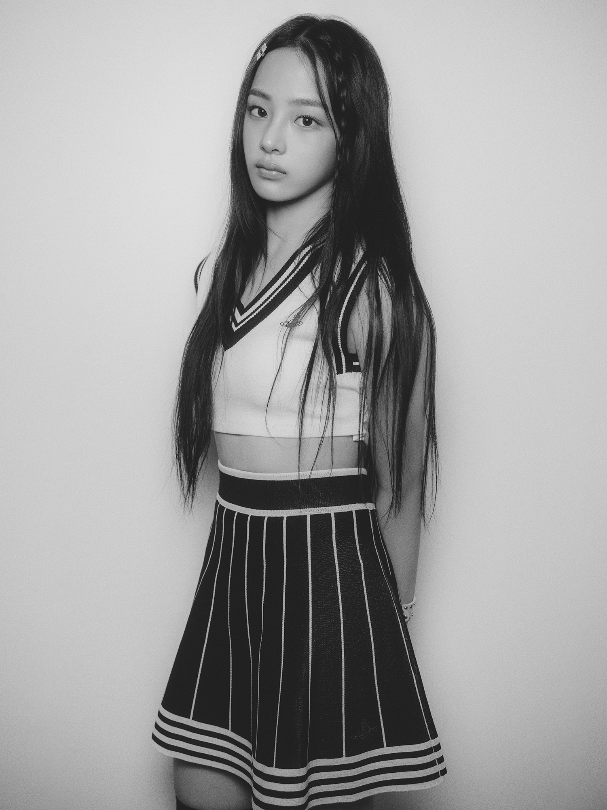
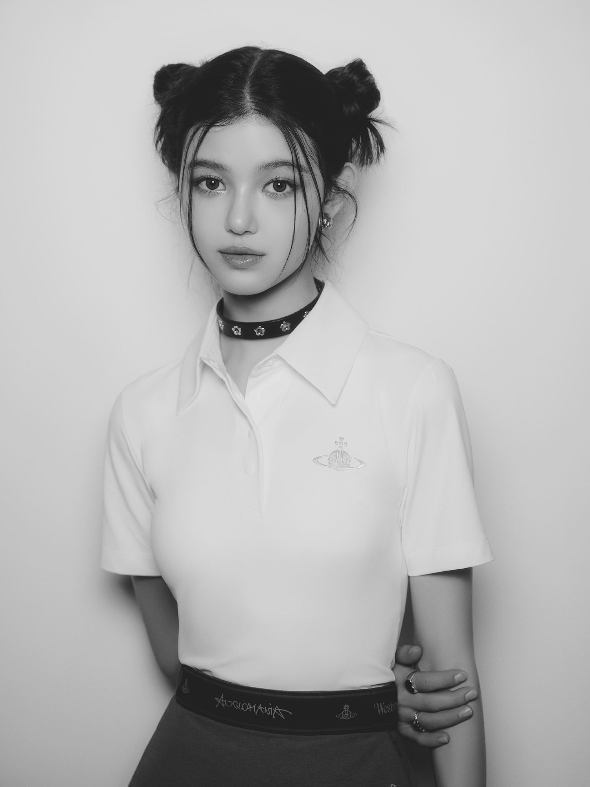

Introduction of New Jeans




Attention
작사 Gigi, Duckbay(Cosmos Studios Stockholm), 다니엘(DANIELLE)
작곡 250, Duckbay(Cosmos Studios Stockholm)
편곡 250
Hype boy
작사 Gigi, Ylva Dimberg, 하니(HANNI)
작곡 250, Ylva Dimberg
편곡 250
Cookie
작사 Gigi, Ylva Dimberg
작곡 Jinsu Park, Ylva Dimberg
편곡 Jinsu Park
PROFILE
-
Minji
이름 : 민지
생년월일 : 2004.05.07

-
Hani
이름 : 하니
생년월일 : 2004.10.06

-
Daniel
이름 : 다니엘
생년월일 : 2005.04.11

-
Haerin
이름 : 해린
생년월일 : 2006.05.15

-
Hyein
이름 : 혜인
생년월일 : 2008.04.21